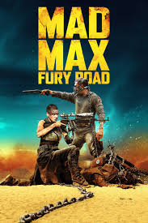
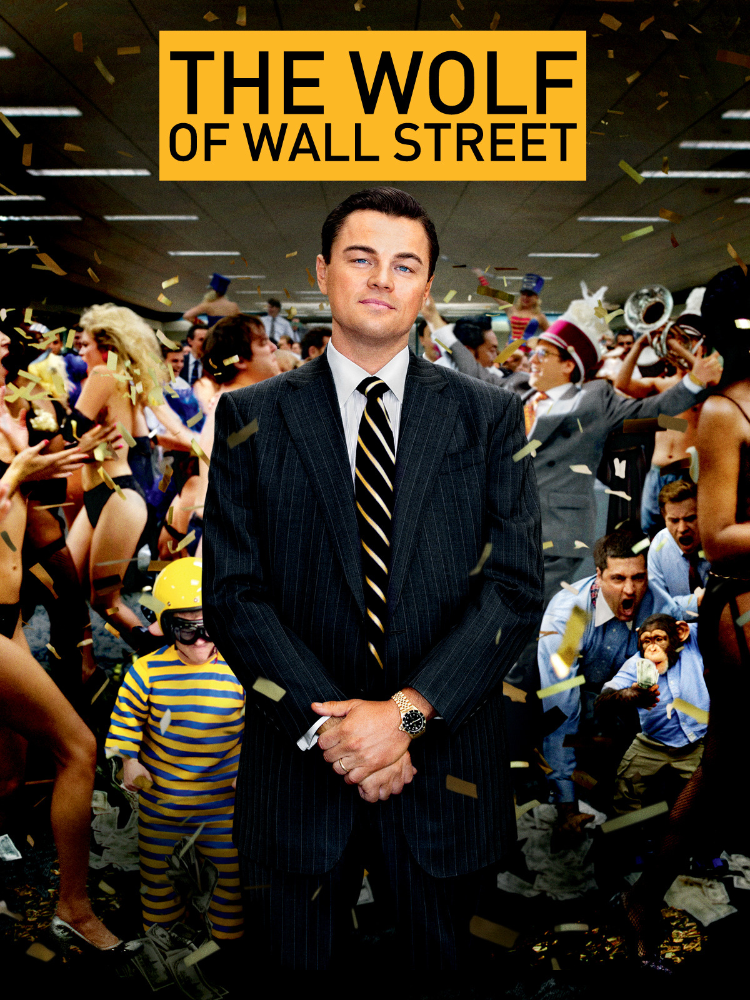

Цей фільм про експедицію космонавтів, що шукають новий дім для людства, є одним з найвідоміших науково-фантастичних фільмів, який поєднує захопливу історію та сучасні наукові дослідження.
Шалений Макс: Дорога люті (Mad Max: Fury Road)

Режисер: Джордж Міллер
Це постапокаліптичний екшн, в якому головні герої намагаються вижити в жорстокому світі. Візуальна сторона та безупинна дія цього фільму захоплюють глядачів з перших хвилин.
Вовк з Волл-стріт (The Wolf of Wall Street)

Режисер: Мартін Скорсезе
Цей фільм розповідає історію злету та падіння брокера Джордана Белфорта, який заробив мільйони на фінансових махінаціях. Фільм поєднує драму, комедію та критику суспільства.